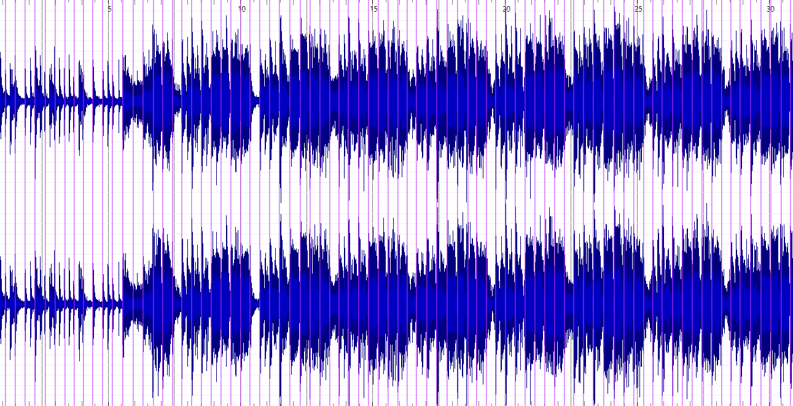
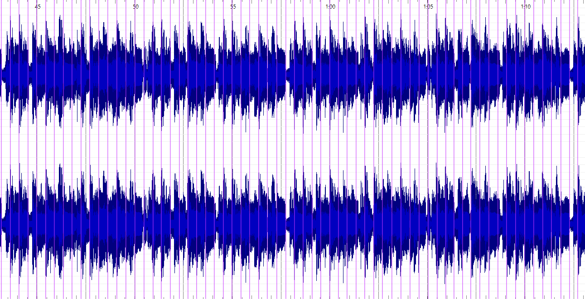
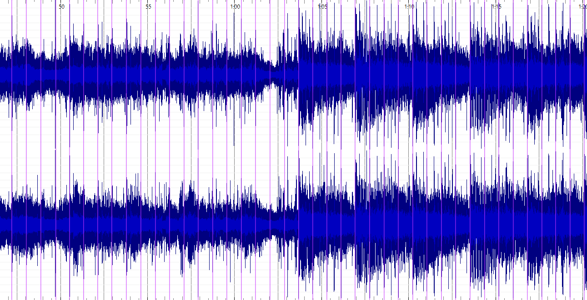

Rhythm & Structure
One of the biggest sonic differences between the albums can be found in the use of rhythm and beats. To show this 30 second snippets of a representative song of 3 albums were used.
In Five Man Army, rhythm is the most important driving force in the song. The waveform and beat detection show strong beats in a consistent pattern, showing a hiphop and dub influence where groove and repetition are essential. Listening to the song also proves this, hearing heavy drums and bass, and a song centered around rhythm.
In Dissolved Girl, the waveform shows rhythm becomes a bit more complex and less constant, with the waveform showing more variation in intensity than in Five Man Army. Listening to the song you will hear the same dub influenced type of drums throughout most of the song, but with more variation and indeed a bit more complexity, creating more contrast and tension.
In what your soul sings, the focus is more on the melody and vocals, rhythm becomes much less dominant. It has a smoother and less dense waveform, with a beat structure that is also less pronounced. Rhythm supports the atmospheric pads, guitar and balls more than bring an important groove to the song. Listening to the song you will find that it does have quite complex drums, very quick paced and a reversed drum track pasted over it, so the drums are more texture focused than groove i would say here.
This progression shows Massive Attacks' later albums becoming less and less rhythm and groove focused, with a bigger focus on texture and atmosphere.
Five Man Army (1991)

Beat detection over waveform
A dense and highly consistent pattern, with heavy peaks corresponding to strong drum hits, all showing a groove based structure.
Dissolved Girl (1998)

Beat detection over waveform
A more complex and varied pattern, with less consistent beats and more dynamic intensity changes.
What Your Soul Sings (2003)

Beat detection over waveform
A smoother and less dense waveform, with a less pronounced beat structure.